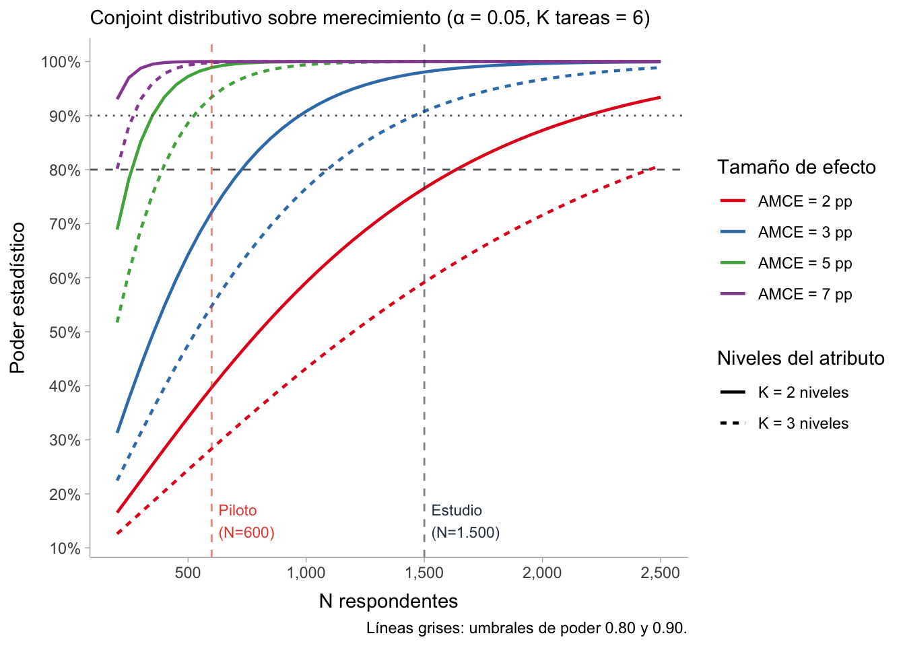

Distribuir bajo escasez: diseño y fundamentos de un conjoint distributivo sobre merecimiento en educación superior en Chile
1 Introducción
Este documento presenta el diseño de un conjoint survey experiment distributivo sobre merecimiento y asignación de becas en educación superior en Chile. El objetivo es estudiar cómo las personas ponderan criterios de mérito, necesidad e identidad cuando deben distribuir un recurso escaso entre dos postulantes que compiten por financiamiento para su primer año de estudios. El diseño usa un outcome continuo (porcentaje de beca asignado a cada postulante mediante un slider) que obliga a revelar prioridades bajo trade-offs reales, a diferencia de los conjoints de elección forzada o las preguntas actitudinales directas.
El documento se organiza en tres partes: un marco metodológico que distingue entre factorial, conjoint y distributional survey experiments; una revisión sistemática de cómo la literatura ha operacionalizado criterios de merecimiento en diseños factoriales, con énfasis en atributos, niveles y tamaños de efecto reportados; y la propuesta de diseño propiamente tal, que incluye escenario experimental, atributos, aleatorización, interfaz, modelo estadístico y análisis de poder.
2 Survey experiments como familia metodológica: FSE, CSE y DSE
Los experimentos factoriales de encuesta (factorial survey experiments, en sentido amplio) son una familia de métodos experimentales implementados mediante encuestas que adaptan la lógica del diseño factorial clásico al contexto de los estudios de opinión y comportamiento. En la tradición experimental, los tratamientos reciben el nombre de factores, y cada factor puede adoptar distintos valores denominados niveles o condiciones. Un experimento factorial manipula simultáneamente dos o más factores, de modo que los sujetos son asignados aleatoriamente a combinaciones de condiciones: un diseño 2×2 con factores A (condiciones \(A_1\), \(A_2\)) y B (condiciones \(B_1\), \(B_2\)) produce cuatro grupos experimentales —\(A_1B_1\), \(A_1B_2\), \(A_2B_1\), \(A_2B_2\)— lo que permite estimar tanto el efecto de cada factor por separado como sus interacciones. Los experimentos factoriales de encuesta trasladan esta lógica al cuestionario: en lugar de manipular condiciones de laboratorio, manipulan aleatoriamente los atributos de situaciones, personas o políticas hipotéticas presentadas a los respondentes.
Lo que define a esta familia es la combinación de la estructura multidimensional del estímulo y la asignación aleatoria de los niveles de cada factor, que permite interpretar las diferencias en las respuestas como efectos causales (Auspurg & Hinz, 2016). Esto los distingue de los experimentos de estímulo único —donde solo se varía un tratamiento a la vez— y de los estudios observacionales —donde los atributos no están bajo control del investigador—.
Dentro de esta familia coexisten tres formatos que comparten la lógica factorial pero difieren en la tarea solicitada al respondente, la forma de presentar los estímulos y el tipo de inferencia que permiten: el factorial survey experiment (FSE) o estudio de viñetas, el conjoint survey experiment (CSE) y el distributional survey experiment (DSE).
2.1 Definiciones conceptuales: vocabulario común de los experimentos factoriales
Atributo (factor o dimensión). Característica del perfil manipulada experimentalmente; equivale a un tratamiento en sentido experimental.
Nivel. Cada valor posible de un atributo. Los niveles deben ser exhaustivos, mutuamente excluyentes y redactados de forma comprensible y plausible para el respondente.
Perfil (profile). Combinación de un nivel de cada atributo que describe a un individuo, situación o política hipotética. Es la unidad básica de estimulación: lo que el respondente observa y evalúa.
Viñeta (vignette). Perfil presentado en formato de texto narrativo, típicamente un párrafo que integra los niveles en prosa. Es el formato característico del FSE (Auspurg & Hinz, 2016). El CSE y el DSE usan preferentemente el formato tabular —filas de atributos, columnas de perfiles— que facilita la comparación directa y la lectura modular.
Tarea (task). Lo que el respondente debe hacer en cada momento de exposición al estímulo: evaluar una viñeta en escala (FSE), elegir entre perfiles (CSE) o distribuir un recurso entre perfiles (DSE). Cada respondente completa típicamente entre 4 y 15 tareas con perfiles generados de forma independiente.
Conjunto de elección (choice set). Grupo de perfiles presentados simultáneamente en una misma tarea. El CSE estándar usa dos perfiles por tarea; el DSE original de Gilgen (2022) usa tres.
Deck (mazo). Secuencia completa de tareas que recibe un respondente. En aleatorización completa, cada respondente recibe un deck único generado en tiempo real. En diseños D-eficientes, los decks se precompilan y cada respondente recibe uno asignado aleatoriamente.
Espacio factorial. Conjunto de todos los perfiles posibles, calculado como el producto del número de niveles de cada atributo. En el presente estudio: 3 × 2 × 2 × 2 × 2 × 2 × 3 = 288 perfiles. Ningún respondente observa más que una fracción pequeña de este espacio.
Diseño D-eficiente. Estrategia que selecciona un subconjunto del espacio factorial maximizando la ortogonalidad entre atributos y minimizando la varianza de los estimadores. Es el estándar en FSE y DSE (Auspurg & Hinz, 2016; Gilgen, 2022). El CSE canónico prefiere la aleatorización completa, que sortea niveles de forma independiente en cada exposición sin preseleccionar perfiles (Hainmueller et al., 2014).
Aleatorización completa (fully randomized design). Los niveles de cada atributo se asignan de forma aleatoria e independiente en cada perfil y tarea, sin restricciones previas. Es el estándar del CSE (Hainmueller et al., 2014).
Balance de niveles. Propiedad que garantiza que cada nivel aparece aproximadamente el mismo número de veces en el total de perfiles observados. Emerge estadísticamente en la aleatorización completa; se impone formalmente en los diseños D-eficientes.
Ortogonalidad. Los niveles de un atributo no predicen los niveles de ningún otro: la distribución conjunta de dos atributos es igual al producto de sus marginales. Condición necesaria para estimar efectos de cada atributo sin confusión con los demás. Se cumple en expectativa bajo aleatorización completa; se impone formalmente en diseños D-eficientes.
2.2 El factorial survey experiment (FSE): viñetas y evaluación de situaciones hipotéticas
Desarrollado por Rossi y Anderson (1982) y sistematizado por Auspurg & Hinz (2016), el FSE presenta a los encuestados descripciones textuales de situaciones hipotéticas —viñetas— construidas mediante la combinación aleatoria de atributos manipulados, y les solicita una evaluación en escala (¿Qué tan merecedora de ayuda es esta persona? ¿Cuán justo es este salario?). La integración de los atributos en una descripción multidimensional reduce el sesgo de deseabilidad social: los respondentes evalúan una situación compleja en lugar de responder directamente sobre criterios sensibles como etnia o clase. La variación ortogonal de los atributos permite estimar el efecto marginal de cada dimensión evitando la multicolinealidad propia de los diseños observacionales. Auspurg & Hinz (2016) recomiendan no superar siete dimensiones (±2) para no sobrecargar cognitivamente al encuestado. Las viñetas se evalúan secuencialmente de forma independiente, sin comparación directa entre sí dentro de la misma tarea.
Aleatorización en el FSE. Para cada viñeta se sortea aleatoriamente un nivel de cada atributo, típicamente con distribución uniforme aunque pueden usarse distribuciones ponderadas para aproximar prevalencias reales. Dado el crecimiento exponencial del espacio factorial, el FSE suele usar un diseño D-eficiente: se preselecciona un subconjunto de perfiles que maximiza ortogonalidad y balance, garantizando que cada nivel aparezca el mismo número de veces y que los atributos no estén correlacionados entre sí (Auspurg & Hinz, 2016).
2.2.1 Ventajas y limitaciones del FSE
Ventajas. Reduce el sesgo de deseabilidad social al integrar los atributos en descripciones multidimensionales, evita efectos de contraste entre viñetas al evaluarlas de forma independiente, y permite modelar el outcome directamente mediante OLS con errores estándar agrupados por respondente (Auspurg & Hinz, 2016).
Limitaciones. Al evaluar cada viñeta por separado, el respondente no enfrenta trade-offs explícitos entre perfiles, lo que puede producir respuestas más generosas y menos discriminantes que las de una decisión real bajo escasez. El formato narrativo dificulta controlar el orden de los atributos dentro de la viñeta, introduciendo posibles efectos de primacía o recencia (Bansak et al., 2021).
2.3 El conjoint survey experiment (CSE): inferencia causal sobre elecciones multidimensionales
Introducido formalmente en las ciencias sociales por Hainmueller et al. (2014), el CSE presenta al respondente dos o más perfiles hipotéticos lado a lado en formato tabular y le solicita que elija cuál prefiere —o que evalúe cada uno en una escala—. Los perfiles se construyen mediante la combinación aleatoria de niveles de distintos atributos (Bansak et al., 2021). A diferencia del FSE, la estructura comparativa de la tarea y el formato tabular facilitan la comparación directa entre alternativas; la aleatorización completa permite interpretar los efectos como causales bajo el supuesto de no interferencia entre perfiles dentro de la tarea (SUTVA) y de aleatorización completa e independiente de los niveles (Hainmueller et al., 2014).
El estimador central es el Average Marginal Component Effect (AMCE): el cambio promedio en la probabilidad de elección de un perfil cuando un atributo pasa de su categoría de referencia a otra, promediado sobre la distribución aleatoria de los demás atributos. Se estima mediante regresión lineal con errores estándar agrupados por respondente (Hainmueller et al., 2014).
Aleatorización en el CSE. Los niveles de cada atributo se sortean de forma uniforme e independiente en cada perfil y tarea, garantizando ortogonalidad en expectativa. Una implicación crucial es que el investigador nunca cubre todo el espacio factorial —que en diseños realistas puede tener decenas de miles de perfiles— sino que toma una muestra aleatoria de él. La cobertura exhaustiva no es un requisito para la validez causal: lo que garantiza la inferencia es la independencia de la aleatorización, no haber observado todas las combinaciones posibles. Con N respondentes, K tareas y J perfiles por tarea, se observan N×K×J perfiles en total (Bansak et al., 2021).
Leeper et al. (2020) advierten que el AMCE depende de la categoría de referencia elegida, lo que puede introducir errores en comparaciones entre subgrupos. Cuando el interés es describir niveles de favorabilidad sin anclarlos a una referencia, o comparar preferencias entre subgrupos, son preferibles los marginal means: probabilidades promedio de elección cuando un atributo adopta un nivel determinado, promediadas sobre todos los demás atributos, y que no dependen de ninguna categoría de referencia. La eficiencia estadística del CSE es otra ventaja central: al asignar múltiples tareas por respondente, permite estimar los efectos de muchos atributos simultáneamente sin multiplicar el tamaño muestral (Bansak et al., 2021).
2.3.1 Ventajas y limitaciones del CSE
Ventajas. Combina eficiencia estadística e interpretación causal directa: la presentación paralela obliga a ponderar atributos en competencia, el formato tabular reduce ambigüedad, y la aleatorización completa permite estimar el AMCE mediante regresión lineal simple. Diseños de hasta 30 tareas por respondente no degradan la calidad de las respuestas en paneles online (Bansak et al., 2021).
Limitaciones. El AMCE depende de una categoría de referencia arbitraria, lo que puede introducir errores en comparaciones entre subgrupos; en esos casos son preferibles los marginal means (Leeper et al., 2020). Además, el forced-choice solo informa sobre la dirección de la preferencia, no sobre su magnitud, y no captura la interdependencia propia de las decisiones de asignación real.
2.4 El distributional survey experiment (DSE): asignación activa bajo escasez e interdependencia
El DSE es una innovación metodológica propuesta por Gilgen (2022) para superar la limitación que comparten FSE y CSE: ninguno captura la interdependencia inherente a las decisiones de asignación reales. En el FSE, cada viñeta se evalúa de forma aislada; en el CSE, el respondente solo indica cuál perfil prefiere, pero no cuánto más ni cómo distribuiría un recurso entre ambos.
El DSE combina elementos de tres tradiciones. Del FSE adopta la construcción multidimensional de perfiles con atributos de mérito, necesidad e identidad. Del choice experiment (CE) toma la presentación simultánea de múltiples perfiles con diseño D-eficiente. El tercer componente proviene del juego del dictador (Camerer, 2011): un jugador distribuye unilateralmente una suma entre sí mismo y otro, sin que este pueda rechazar. Este diseño mide preferencias distributivas y normas de equidad en condiciones controladas. El DSE traslada esta lógica a la encuesta: el respondente asume el rol de asignador externo que distribuye un recurso entre personas descritas en viñetas. A diferencia del juego del dictador clásico, el asignador no tiene interés personal en el resultado, lo que aísla preferencias de justicia de incentivos de auto-interés; y los perfiles multidimensionales permiten identificar qué criterios de justicia activa el respondente bajo escasez, algo que el juego del dictador simple no puede hacer (Almås et al., 2010).
El resultado es que las decisiones son intrínsecamente interdependientes: lo asignado a un perfil reduce lo disponible para los demás, replicando la lógica de las decisiones distributivas reales bajo escasez. En el diseño original de Gilgen (2022), los respondentes distribuyen una suma fija entre tres personas en cuatro contextos situacionales —amistades, trabajo, familia y becas— para explorar cómo la norma de justicia dominante varía según la relación social en juego.
Aleatorización en el DSE. El DSE usa un diseño D-eficiente para construir los conjuntos de elección, dado que la interdependencia del outcome hace especialmente importante garantizar ortogonalidad y balance entre los perfiles de cada conjunto. El diseño agrupa los perfiles de modo que los atributos sean lo más cercanos posible a ortogonales tanto dentro como entre conjuntos de elección (Gilgen, 2022). En la práctica, se precompilan decks que satisfacen estas propiedades y cada respondente recibe uno asignado aleatoriamente.
2.4.1 Ventajas y limitaciones del DSE
Ventajas. Replica la lógica de escasez de las decisiones distributivas reales: asignar más a un perfil reduce lo disponible para los demás. El outcome continuo es más informativo que la elección binaria del CSE, y la estructura de juego del dictador aproxima conducta distributiva revelada, reduciendo el sesgo de deseabilidad social (Camerer, 2011; Gilgen, 2022).
Limitaciones. La tarea es cognitivamente más exigente que el FSE o el CSE, lo que puede aumentar el satisficing igualitario (50/50) como atajo. Analíticamente, la interdependencia del outcome (A + B = 100) requiere modelos de efectos fijos por tarea o análisis de diferencias dentro de la tarea para manejar la dependencia entre observaciones.
2.5 Cuadro comparativo de los tres formatos
| Dimensión | FSE | CSE | DSE |
|---|---|---|---|
| Presentación de perfiles | Texto narrativo | Tabla (perfiles paralelos) | Tabla (perfiles paralelos) |
| Tarea del respondente | Calificar cada perfil | Elegir entre perfiles | Distribuir suma fija entre perfiles |
| Outcome | Escala continua / Likert | Elección binaria / escala | Proporción asignada (0–100%) |
| Número de perfiles por tarea | 1 | 2–3 | 3 (típicamente) |
| Aleatorización | Niveles sorteados aleatoriamente por dimensión, independientes entre sí. Frecuente uso de diseños D-eficientes para maximizar ortogonalidad. | Niveles sorteados de forma aleatoria e independiente para cada atributo y cada perfil. Diseño completamente aleatorizado como estándar. | Niveles sorteados dentro de cada conjunto de elección, usualmente con diseño D-eficiente para garantizar ortogonalidad entre viñetas y dimensiones. |
| Base de la inferencia causal | Independencia entre dimensiones dentro de la viñeta y entre viñetas. No interferencia entre tareas. | Aleatorización completa e independiente de atributos. No interferencia entre perfiles dentro de la tarea (SUTVA). SE agrupados por respondente. | Ortogonalidad del diseño D-eficiente dentro de cada conjunto. No interferencia entre conjuntos. SE agrupados por respondente. |
| Interdependencia de outcomes | No | Parcial | Sí, por construcción (A+B+C=100%) |
| Estimando principal | Efecto de atributo sobre calificación | AMCE / Marginal mean | Efecto de atributo sobre proporción asignada |
| Captura trade-offs activos | No | Parcialmente | Sí |
| Adecuado para justicia distributiva bajo escasez | Limitado | Parcialmente | Sí, por diseño |
Lo que convierte a los tres formatos en experimentos es la asignación aleatoria de los niveles de los atributos: esa aleatorización garantiza que las diferencias sistemáticas en el outcome sean atribuibles a los atributos manipulados y no a diferencias previas entre perfiles o respondentes. Las diferencias entre formatos son de implementación, no de principio. El FSE y el DSE suelen usar diseños D-eficientes que preseleccionan un subconjunto de perfiles imponiendo ortogonalidad y balance de forma explícita. El CSE estándar, en cambio, sortea los niveles de forma completamente aleatoria e independiente en cada exposición, lo que produce ortogonalidad en expectativa —sin necesidad de precompilación— y facilita la interpretación causal directa del AMCE (Hainmueller et al., 2014). En ninguno de los tres casos es necesario que los respondentes observen todas las combinaciones posibles del espacio factorial: la validez causal descansa en la independencia de la aleatorización, no en la cobertura exhaustiva de los perfiles. La complicación específica del DSE es que la interdependencia del outcome —dar más a un perfil implica dar menos a los demás— no amenaza la identificación causal, pero sí requiere tratamiento estadístico explícito: típicamente, modelos con efectos fijos por conjunto de elección y errores estándar agrupados por respondente.
3 ¿Cómo se ha operacionalizado el merecimiento en los experimentos factoriales?
La siguiente tabla resume cómo un conjunto de estudios recientes han operacionalizado los criterios centrales de merecimiento, junto con los atributos específicos utilizados, el número de niveles y los tamaños de efecto más relevantes, cuando están disponibles. Ver el Anexo para el detalle de cada árticulo revisado.
| Atributo | Niveles | Efecto reportado | Fuente | Diseño |
|---|---|---|---|---|
| Causa de la dependencia de bienestar | Autoinfligida / no autoinfligida | +5–8 pp (no autoinfligida) | Dietrich et al. (2023) | CSE |
| Razón de migración | Búsqueda de trabajo / persecución gubernamental | +19 pp (persecución vs. trabajo) | Hainmueller et al. (2014) | CSE |
| Atributo | Niveles | Efecto reportado | Fuente | Diseño |
|---|---|---|---|---|
| Expresión de gratitud hacia la ayuda recibida | Agradecido/a / indiferente / desagradecido/a | Nulo cuando se separa de reciprocidad; efectos previos probablemente capturaban reciprocidad | Meuleman et al. (2020); Laenen et al. (2021) | FSE |
| Cooperación con la administración de bienestar | Puntual y documentación completa / impuntual e incompleta | +4–6 pp (cooperativo vs. no cooperativo) | Dietrich et al. (2023) | CSE |
| Atributo | Niveles | Efecto reportado | Fuente | Diseño |
|---|---|---|---|---|
| Condición para recibir renta básica | Incondicional / participación / reciprocidad-incapacidad / empleo | Varía; condicionalidad no reduce apoyo | Rincón (2021) | CSE |
| Atributo | Niveles | Efecto reportado | Fuente | Diseño |
|---|---|---|---|---|
| Nacionalidad del solicitante | Nacional / extranjero | −5 a −7 pp (extranjero) | Dietrich et al. (2023) | CSE |
| Elegibilidad de la renta básica | Residente permanente / 5 años / 10 años | Restricción aumenta apoyo | Stadelmann-Steffen & Dermont (2020) | CSE |
| Nombre como señal étnica | Nombre local / árabe / eslavo | Nulo en becas; positivo en otros contextos | Gilgen (2022) | DSE |
| Religión del inmigrante | Cristiano / musulmán | −7 pp admisión; −20 pp similitud cultural | Hoffmann & Velasco (2024) | CSE |
| Sexualidad del inmigrante | Heterosexual / lesbiana o gay | Nulo en admisión; −7 pp similitud cultural | Hoffmann & Velasco (2024) | CSE |
| Raza del receptor de bienestar | Blanco / negro / hispano | Predice oposición al gasto; nulo en actitud | Zhirkov et al. (2025) | CSE |
| Atributo | Niveles | Efecto reportado | Fuente | Diseño |
|---|---|---|---|---|
| Situación financiera del hogar | Holgada / ajustada | +13 pp (ajustada vs. holgada) | Gilgen (2022) | DSE |
| Reubicación para estudiar | Puede quedarse en casa / debe mudarse | +9 pp (debe mudarse) | Gilgen (2022) | DSE |
| Educación parental | Obligatoria / formación profesional (VET) / universitaria | +3 pp (obligatoria vs. universitaria) | Gilgen (2022) | DSE |
| Atributo | Niveles | Efecto reportado | Fuente | Diseño |
|---|---|---|---|---|
| Industriousness declarado | No muy / más o menos / muy trabajador/a | +6 pp por nivel más alto | Gilgen (2022) | DSE |
| Nota de acceso (Matura / GPA) | 4.5 / 5.0 / 5.5 (CH) o 2.0 / 3.0 / 3.7 (US) | +2 pp por nota más alta | Gilgen (2022) | DSE |
| Nivel educativo formal | Sin educación formal / bachillerato / universitaria / posgrado | +18 pp (posgrado vs. sin educación) | Hainmueller et al. (2014) | CSE |
| Habilidad / ocupación | Educación primaria / secundaria / doctorado médico | +17 pp (doctor vs. primaria) | Hoffmann & Velasco (2024) | CSE |
| Atributo | Niveles | Efecto reportado | Fuente | Diseño |
|---|---|---|---|---|
| Diseño redistributivo del arancel universitario | Fijo / pago diferido / diferenciado por ingreso parental | +20–25 pp (diferido vs. fijo) | Busemeyer et al. (2025) | FSE |
| Mecanismo de financiamiento de la política | Impuesto al consumo / renta / deuda / recorte educación / recorte defensa | ±20 pp (recorte educación vs. recorte defensa) | Gallego & Marx (2017) | CSE |
| Gasto social adjunto a política climática | Sin programas / desempleo / formación laboral / subsidios a hogares pobres | +13–15 pp (formación / subsidios) | Baute (2025) | CSE |
3.1 Observaciones metodológicas transversales que emergen de esta revisión
Diversas conclusiones de diseño se derivan de la revisión de estos estudios y que son relevantes para las decisiones del diseño.
La primera trata sobre el número de atributos y de tareas. Los diseños exitosos de esta colección usan entre 4 y 8 atributos, con 2 a 5 niveles cada uno, y entre 2 y 8 tareas por respondente. El límite cognitivo de “7 más menos 2” que Auspurg & Hinz (2016) establecen para los FSEs parece aplicarse también a los conjoints, aunque Bansak et al. (2021) demuestran empíricamente que hasta 30 tareas son posibles sin degradación en paneles online. El piloto del proyecto propio, con 7 dimensiones y 6 tareas, está dentro del rango manejable.
La segunda trata sobre la aleatorización. Los diseños más simples usan asignación completamente aleatoria con probabilidades uniformes —como recomienda Hainmueller et al. (2014)—, mientras que los diseños D-eficientes, como el de Gilgen (2022), están justificados cuando el número de perfiles es muy grande (más de 200) y se necesita maximizar la cobertura del espacio factorial con pocas observaciones. Para el piloto con aleatorización completa y N \(\ge\) 500 respondentes, la eficiencia es suficiente.
La tercera trata sobre el outcome y su sensibilidad respecto de la identidad. El paper de Zhirkov et al. (2025) muestra que los criterios de identidad (raza) son más detectables mediante medidas de gasto que mediante medidas de actitud. Esto respalda la elección de un outcome distributivo continuo (el slider) frente a una pregunta actitudinal o una elección binaria, porque el slider captura matices que una pregunta actitudinal oculta.
La cuarta trata sobre los tamaños de efecto esperados. En los conjoints de individuos (Gilgen, 2022; Hainmueller et al., 2014; Hoffmann & Velasco, 2025), los efectos de los atributos más fuertes oscilan entre 7 y 18 puntos porcentuales. En los conjoints de política (Busemeyer & Rinscheid, 2025; Busemeyer et al., 2026; Gallego & Marx, 2017; Rincon, 2023), los efectos más grandes —especialmente del financiamiento— pueden superar los 20 pp. Para el proyecto propio, es razonable esperar efectos del atributo más fuerte (necesidad por la situación financiera o control por el rendimiento escolar) de 8 a 13 pp sobre el porcentaje de beca asignado, y efectos de los atributos de identidad (nacionalidad, origen indígena) de 3 a 7 pp.
4 Propuesta de diseño: conjoint distributivo sobre merecimiento y becas en educación superior en Chile
4.1 Pregunta y objetivo
Este experimento busca analiazar cómo las personas distribuyen una beca parcial para el primer año de educación superior cuando deben ponderar simultáneamente criterios de mérito, necesidad e identidad bajo escasez. La pregunta no es solo quién es preferido sino cuánto recibe cada postulante cuando dos personas compiten por un fondo limitado. A diferencia de los conjoints de elección forzada, el outcome distributivo continuo captura trade-offs entre principios de justicia que los diseños binarios tienden a opacar (Gilgen, 2022; Zhirkov et al., 2025), y es especialmente adecuado para el contexto chileno, donde la tensión entre mérito y compensación de desventaja de origen es estructuralmente saliente.
4.2 Tipo de diseño
Paired-profile distributive conjoint. Cada tarea presenta dos postulantes con atributos aleatorizados. La tarea del respondente es distribuir el 100% de un fondo fijo entre ambos. El outcome es el porcentaje asignado a cada perfil, con A + B = 100% por construcción.
Se usan dos perfiles en lugar de tres —como en Gilgen (2022)— por dos razones: reduce la carga cognitiva de una tarea ya más exigente que una elección binaria, y simplifica tanto la interfaz como el modelo estadístico, porque la interdependencia del outcome es trivial (B = 100 − A).
4.3 Escenario y prompt
El respondente asume el rol de integrante de un comité de becas. Este encuadre activa un marco de responsabilidad pública, reduce el sesgo de deseabilidad social y es consistente con los diseños de Dietrich et al. (2026) y Gilgen (2022). Ambos postulantes tienen el mismo puntaje PAES dentro de cada tarea, lo que se declara en el prompt para eliminar la diferencia más obvia en mérito estandarizado y forzar que la asignación dependa de los atributos experimentales.
“Imagine que usted forma parte de un comité universitario encargado de asignar una beca de apoyo para estudiantes de primer año.
Los dos postulantes que verá a continuación fueron aceptados en la misma carrera y universidad, donde los estudiantes deben pagar para estudiar. La beca disponible es de $1.500.000 para el primer año.
Reparta el 100% de la beca entre ambos postulantes según su criterio.
En algunos casos, esta beca puede ser determinante para que el o la postulante pueda costear su primer año de estudios.”
4.4 Atributos y niveles
El diseño tiene 7 dimensiones y 288 perfiles posibles \((3 \times 2 \times 2 \times 3 \times 2 \times 2 \times 2 = 288)\)
| Dimensión | K | Niveles | Criterio |
|---|---|---|---|
| Rendimiento escolar | 3 | Bajo el promedio / En el promedio / Sobre el promedio | Control / Mérito |
| Situación financiera del hogar | 2 | Llega con dificultad a fin de mes / Llega con holgura | Necesidad |
| Educación parental | 2 | Ninguno de sus padres tiene educación superior / Al menos uno tiene educación superior | Necesidad / Igualdad de oportunidades |
| Tipo de colegio | 3 | Municipal / Particular subvencionado / Particular pagado | Necesidad / Desigualdad estructural |
| Sexo | 2 | Señalizado por nombre masculino / Señalizado por nombre femenino | Identidad |
| Nacionalidad | 2 | Chileno/a / Extranjero/a | Identidad |
| Origen indígena | 2 | Tiene origen indígena / No tiene origen indígena | Identidad |
| Nota: El espacio factorial total es $3 \times 2 \times 2 \times 3 \times 2 \times 2 \times 2 = 288$ perfiles posibles. El sexo se señaliza mediante el nombre del postulante en el encabezado de cada columna de la tabla conjoint. | |||
Las decisiones de diseño más relevantes son cuatro. Primero, el rendimiento escolar se expresa como posición relativa dentro del curso (no como puntaje absoluto) porque captura el esfuerzo en el contexto específico del postulante, independientemente de la calidad del establecimiento. Segundo, el sexo se señaliza por nombre siguiendo a Gilgen (2022), con nombres equivalentes en familiaridad y sin connotaciones de clase o etnia. Tercero, el origen indígena se declara como atributo explícito (no por nombre) porque en Chile los nombres indígenas son ambiguos y mezclarían señales de etnia, región y clase de forma incontrolada. Cuarto, actitud y reciprocidad quedan fuera del piloto por parsimonia: con 7 dimensiones el diseño ya está en el límite recomendado de 7 más menos 2 atributos (Auspurg & Hinz, 2016), y la tarea distributiva es cognitivamente más exigente que una elección binaria.
4.4.1 Aleatorización completa y cobertura del espacio factorial
Una pregunta frecuente en el diseño de conjoints es si es necesario garantizar que todas las combinaciones posibles de atributos sean observadas —es decir, que el espacio factorial quede cubierto exhaustivamente— y si eso requiere un diseño D-eficiente. La respuesta es no en ambos casos.
El espacio factorial del presente diseño contiene 288 perfiles posibles. Con N = 1.000 respondentes, K = 6 tareas y 2 perfiles por tarea se generan 12.000 perfiles observados en total, lo que supera en más de 40 veces el tamaño del espacio factorial. Pero incluso si el número de observaciones fuera menor, la cobertura exhaustiva del espacio factorial no es un requisito para la validez causal: lo que garantiza la inferencia es la independencia de la aleatorización, no haber observado todas las combinaciones posibles. La lógica es la misma que en cualquier experimento aleatorizado: la validez causal no requiere que todos los valores posibles de las covariables sean observados en cada condición, sino que la asignación al tratamiento sea independiente de los resultados potenciales. Dado que los niveles de cada atributo se sortean de forma uniforme e independiente en cada perfil y tarea, cualquier atributo queda ortogonal a los demás en expectativa, y las diferencias promedio en el outcome entre perfiles que difieren en un atributo pueden interpretarse causalmente (Hainmueller et al., 2014). Leeper et al. (2020) señalan que un conjoint completamente aleatorizado es simplemente un experimento factorial completo con algunas celdas no observadas al azar, no sistemáticamente, y esa ausencia no introduce sesgo. En el experimento canónico de Hainmueller et al. (2014), el 98% de las celdas del espacio factorial quedaron sin observar; el diseño es, no obstante, el estándar metodológico del campo.
Un diseño D-eficiente es necesario cuando el espacio factorial es muy grande en relación al tamaño muestral disponible y el balance no emerge con suficiencia de forma espontánea, o cuando el outcome es interdependiente entre perfiles dentro de la misma tarea —como en el DSE de Gilgen (2022), donde A + B + C = 100%—. Ninguna de esas condiciones aplica aquí: el espacio de 288 perfiles es pequeño en relación a las 12.000 observaciones generadas, la aleatorización completa produce balance satisfactorio, y la complejidad adicional del diseño D-eficiente no ofrece ninguna ventaja compensatoria para los estimandos de interés.
4.5 Outcome, interfaz y tareas
Outcome principal: porcentaje asignado al perfil (0–100 pp), con A + B = 100 operado por la interfaz. Se muestra simultáneamente el porcentaje y el monto en pesos para facilitar la comprensión de la magnitud de la decisión.
Interfaz: slider único de 0 a 100 para el Postulante A; el Postulante B se actualiza automáticamente. El punto de partida del slider se evalúa en el pretest para detectar posible anclaje en 50/50.
Tareas: 6 por respondente en el piloto, precedidas por una tarea de práctica. Con N = 1.000 y K = 6 se obtienen 6.000 decisiones y 12.000 evaluaciones de perfil.
4.6 Tamaño muestral
El análisis de poder sigue las fórmulas de Schuessler & Freitag (2020), que proveen soluciones cerradas para el \(N\) mínimo en conjoints sin supuestos paramétricos adicionales sobre el modelo causal. La fórmula central es:
\[N \approx \frac{K}{2} \cdot \frac{(z_{1-\alpha/2} + z_{\kappa})^2}{\delta_1^2}\]
Donde \(N\) es el total de evaluaciones de perfil (\(N_{\text{respondentes}} \times \text{tareas} \times 2\)), \(K\) es el número de niveles del atributo de interés, y \(\delta_1\) es el AMCE esperado en escala 0–1. El término de varianza se simplifica a \(\approx 1\) bajo el supuesto conservador de \(\delta_0 = 0.5\). Con \(\alpha = 0.05\) y poder \(= 0.80\), \((z_{1-\alpha/2} + z_{\kappa})^2 = 7.84\).
Dos aspectos del diseño propio son relevantes para interpretar estos cálculos. Primero, el diseño tiene atributos de \(K=2\) niveles (situación financiera, educación parental, nacionalidad, origen indígena) y atributos de \(K=3\) niveles (rendimiento escolar, tipo de colegio). Los atributos de tres niveles son los más exigentes porque el effective sample size se reduce a \(2/3\) del total de perfiles, requiriendo un \(N\) mayor para la misma potencia. Segundo, el outcome es continuo (porcentaje asignado, 0–100) y no binario como asume la fórmula. Dado que la varianza de un porcentaje distribuido entre 20 y 80 pp es sustancialmente menor que la varianza \(\text{Bernoulli}(0.5)\) que asume la fórmula, los cálculos presentados son conservadores: sobreestiman el \(N\) necesario y por tanto ofrecen margen de seguridad.
El efecto mínimo de interés es 3 pp, que corresponde al efecto más pequeño reportado en Gilgen (2022) para educación parental y al rango bajo estimado para atributos de identidad en Dietrich et al. (2026).
Piloto (\(N = 600\)–\(700\)). Con \(N=600\) y \(K=6\) tareas se obtienen 7.200 evaluaciones de perfil. El efecto mínimo detectable (MDE) con poder \(= 0.80\) es:
\[\delta_1 = \sqrt{\frac{K}{2} \cdot \frac{7.84}{N_{\text{perfiles}}}}\]
Los efectos más grandes del diseño —situación financiera (+13 pp), rendimiento escolar (+6 pp)— son detectables con alta seguridad en cualquier escenario del piloto. El efecto de educación parental (+3 pp) queda ligeramente por debajo del MDE con \(N=500\) y en el límite con \(N=700\). Esto es razonable para un piloto, cuyo objetivo central no es la estimación precisa de todos los efectos sino validar el instrumento, calibrar la varianza real del outcome del slider y estimar la ICC entre tareas del mismo respondente para ajustar el \(N\) del estudio principal.
| N respondentes | N perfiles | MDE atributo K=2 | MDE atributo K=3 |
|---|---|---|---|
| 500 | 6.000 | 3.6 pp | 4.4 pp |
| 600 | 7.200 | 3.3 pp | 4.0 pp |
| 700 | 8.400 | 3.1 pp | 3.7 pp |
Estudio principal. El \(N\) mínimo lo fija el atributo más exigente. Para \(K=3\) (rendimiento escolar, tipo de colegio) y \(\text{AMCE} = 3\) pp:
\[N_{\text{perfiles}} = \frac{3}{2} \cdot \frac{7.84}{0.03^2} = 13.067 \quad \Rightarrow \quad N_{\text{respondentes}} = \frac{13.067}{12} \approx 1.089\]
Para análisis de heterogeneidad con un moderador binario (por ejemplo, alta vs. baja creencia meritocrática), Freitag et al. establecen que el \(N\) requerido se multiplica por el número de niveles del moderador:
\[N_{\text{interacción}} \approx 2 \times 1.089 \approx 2.200 \text{ respondentes}\]
| Objetivo | AMCE mínimo | Atributo más exigente | N mínimo |
|---|---|---|---|
| Efectos principales K=2 | 3 pp | Binarios | ~726 |
| Efectos principales K=3 | 3 pp | Rendimiento / tipo colegio | ~1.089 |
| Heterogeneidad (moderador binario) | 3 pp | K=3 + subgrupo | ~2.200 |
| Efectos principales K=3, poder=0.90 | 3 pp | Rendimiento / tipo colegio | ~1.459 |
La Figura 1 resume las curvas de poder estadístico según el N de respondentes (muestra total) para detectar tamaños de efecto a partir de los niveles de cada atributo.

Recomendación: \(N = 1.200\) para el estudio principal si el interés es únicamente en efectos principales con poder \(\geq 0.80\) para todos los atributos. \(N = 1.500\) si se quiere margen adicional y análisis de subgrupos descriptivos. \(N = 2.000\) si se planean análisis de heterogeneidad como estimandos confirmatorios. Dado que los cálculos son conservadores por el supuesto de outcome binario, \(N = 1.500\) es probablemente suficiente para los análisis de heterogeneidad más relevantes del diseño.
4.7 Modelo estadístico y estimandos
Modelo base:
\[\text{share}_{ijt} = \alpha + \beta X_{ijt} + \varepsilon_{ijt}\]
Donde \(\text{share}_{ijt}\) es el porcentaje asignado al perfil \(j\) en la tarea \(t\) del respondente \(i\), \(X_{ijt}\) son los atributos del perfil y los errores estándar se agrupan por respondente. Los coeficientes \(\beta\) estiman los AMCEs sobre el porcentaje asignado (Hainmueller et al., 2014).
Complementariamente se reportan marginal means (el porcentaje promedio asignado a los perfiles que exhiben cada nivel de cada atributo, promediando sobre todos los demás) como estimando preferido para describir niveles de favorabilidad y comparar subgrupos sin depender de una categoría de referencia (Leeper et al., 2020).
Los estimandos se organizan en tres niveles: efectos principales de cada atributo, contrastes entre principios distributivos (¿cuánto más pesa la necesidad que el mérito?) y heterogeneidad por características del respondente, con énfasis en creencias meritocráticas e ideología política.
4.8 Conexión con los marcos CARIN y NICER
El diseño dialoga con los dos marcos teóricos dominantes en la literatura de merecimiento. El modelo CARIN de Oorschot (2000) identifica cinco criterios con los que el público evalúa el merecimiento de los receptores de ayuda: Control (responsabilidad sobre la propia situación), Actitud (gratitud y deferencia), Reciprocidad (contribución pasada o futura), Identity (pertenencia al grupo dominante) y Need (necesidad económica o material). El marco NICER, propuesto por Meuleman et al. (2020) como revisión empírica del CARIN, elimina la actitud como criterio autónomo —cuando se operacionaliza estrictamente como expresión de gratitud, separada de conductas recíprocas, no tiene efecto consistente sobre las percepciones de merecimiento— y separa el esfuerzo actual de la reciprocidad pasada, resultando en los criterios Need, Identity, Control, Effort y Reciprocity.
El diseño propuesto cubre parcialmente ambos marcos. En términos de NICER: Need lo capturan tres atributos en cascada —situación financiera del hogar (necesidad inmediata), educación parental (capital heredado) y tipo de colegio (desventaja estructural acumulada)—; Identity lo capturan nacionalidad, origen indígena y sexo; Control y Effort se operacionalizan conjuntamente mediante el rendimiento escolar relativo al promedio del curso, que refleja tanto el desempeño logrado como el grado en que ese desempeño puede atribuirse a condiciones fuera del control del postulante. Reciprocity y Attitude quedan fuera del piloto: en el contexto de becas de primer año ambos criterios son difíciles de operacionalizar de forma plausible y no ambigua, y su inclusión añadiría carga cognitiva sin ganancia teórica sustantiva para las hipótesis centrales. Ambos pueden incorporarse en versiones posteriores del diseño.
5 Ejemplo experimento
Imagine que usted forma parte de un comité universitario encargado de asignar una beca de apoyo para estudiantes de primer año.
Los dos postulantes que verá a continuación fueron aceptados en la misma carrera y universidad, donde los estudiantes deben pagar para estudiar. La beca disponible es de $1.500.000 para el primer año.
Reparta el 100% de la beca entre ambos postulantes según su criterio.
En algunos casos, esta beca puede ser determinante para que el o la postulante pueda costear su primer año de estudios.
| Catalina | Diego | |
|---|---|---|
| Rendimiento escolar | Sobre el promedio | Bajo el promedio |
| Situación del hogar | Llega con dificultad a fin de mes | Llega con holgura a fin de mes |
| Educación de los padres | Ninguno tiene educación superior | Al menos uno tiene educación superior |
| Tipo de colegio | Municipal | Particular pagado |
| Origen | Tiene origen indígena | No tiene origen indígena |
| Nacionalidad | Chilena | Extranjera |
La suma siempre es igual a $1.500.000 (100%)
6 References
7 Anexo
7.1 Sistematización operacionalización merecimiento
Lo que une a todos los estudios—sean conjoint, viñetas o DSEs— es que todos son factoriales: manipulan de forma controlada y aleatoria múltiples dimensiones simultáneas para identificar qué pesa más en la evaluación o en la asignación. La diferencia no está en el método, sino en el objeto: algunos estudian cómo se evalúa a los individuos (¿Quién merece ayuda? ¿Quién debe ser admitido?); otros estudian cómo se prefieren los diseños de política pública (¿Qué modelo de renta básica apoya a la gente? ¿Cómo debe financiarse la transición verde?). Para el proyecto propio, ambos grupos son igualmente relevantes: el primero informa la operacionalización de los atributos del postulante; el segundo, la lógica de presentación del recurso y la tarea de distribución.
Organizamos la revisión en dos bloques: primero, los estudios que operacionalizan el merecimiento de los individuos; y después, los que operacionalizan las preferencias por características políticas.
7.2 Bloque A: Estudios que operacionalizan el merecimiento de individuos
7.2.1 Gilgen (2022) — Distributional Survey Experiment sobre becas
Este es el antecedente directo del proyecto propio, por lo que merece una descripción más detallada. Gilgen implementó cuatro DSE en distintos contextos —entre amigos, en el trabajo, en familia y en bienes públicos (becas)— con muestras de la población general suiza y de estudiantes en Princeton y en Berna. En cada DSE los encuestados distribuyen una suma de dinero fija entre tres personas descritas en viñetas. El outcome es la cantidad asignada a cada persona y el estimador central es el efecto fijo de cada atributo sobre la participación porcentual obtenida.
Para el DSE de becas, específicamente, el diseño tiene ocho dimensiones, con dos o tres niveles cada una. La identidad y el género se señalan a través del nombre: los nombres usados corresponden a tres grupos étnicos —local (Daniela/Stefan para Suiza; Danielle/Steven para EE.UU.), árabe (Amal/Amir) y eslavo (Lidija/Matia)—, de modo que el nombre codifica simultáneamente el género y el origen étnico. Esta decisión de diseño es la que el proyecto propio revisa: en Chile es preferible separar estas señales porque los nombres indígenas son poco frecuentes y generan asociaciones ambiguas de clase y región.
Los indicadores de necesidad son tres. La educación parental tiene tres niveles: educación obligatoria, formación profesional (VET) y universidad; actúa como proxy de la clase social de origen y de la desventaja estructural. La situación financiera de los padres tiene dos niveles: holgada o ajustada; es la señal más directa de necesidad económica inmediata. La reubicación tiene dos niveles: puede seguir viviendo en casa o debe mudarse para estudiar; esta dimensión no es ni mérito ni necesidad stricto sensu, pero es un indicador de un costo adicional que activa consideraciones compensatorias.
Los indicadores de mérito son dos. El esfuerzo tiene tres niveles: no muy trabajador/a, más o menos trabajador/a, muy trabajador/a. Las notas de acceso son cuasipersonales: en la versión suiza son 4.5, 5.0 y 5.5 sobre una escala de 6; en la versión estadounidense son 2.0, 3.0 y 3.7 en la escala GPA.
Hay una dimensión ambigua, que es el trabajo paralelo a los estudios: tiene tres niveles (hasta medio día, de medio día a un día, de un día a un día y medio por semana), y puede interpretarse tanto como indicador de necesidad —trabaja porque necesita el dinero— como de mérito reducido —trabaja muchas horas, lo que puede restar tiempo al estudio—. Por eso, Gilgen la trata como una dimensión aparte.
La aleatorización es D-eficiente, con 216 viñetas agrupadas en 72 conjuntos de elección de tres perfiles cada uno. La restricción de combinaciones es mínima: las dimensiones son en su mayoría independientes entre sí. En cuanto a los tamaños de efecto, los resultados del modelo de efectos fijos multinivel muestran que los indicadores de necesidad dominan sobre los de mérito. La situación financiera ajustada de los padres aumenta la asignación en hasta 13 puntos porcentuales respecto de la situación holgada. La reubicación (tener que mudarse) incrementa la asignación en 9 pp. La educación parental más baja (obligatoria frente a la universitaria) aumenta en 3 pp. En el lado del mérito, las notas más altas aumentan en 2 pp y el esfuerzo alto en 6 pp. El origen étnico señalado en el nombre no tiene efectos significativos en el contexto de las becas, aunque sí los tiene en otros contextos (amigos, trabajo). La igualdad estricta —distribuir 33/33/33— es la estrategia menos frecuente en el contexto de las becas, lo que confirma que los respondentes consideran activamente los atributos de cada perfil en lugar de ignorarlos.
Un hallazgo contextual importante: cuando la muestra es de estudiantes estadounidenses (Princeton), el peso del mérito es mayor y el de la necesidad menor que en la muestra suiza, lo que confirma la dependencia contextual de los principios de justicia que el proyecto propio también anticipa para el caso chileno.
7.2.2 Dietrich et al. (2026) — Conjoint sobre priorización de clientes de bienestar
Dietrich y colegas usan un conjoint de elección forzada pareada en Alemania para estudiar si funcionarios públicos y ciudadanos priorizan de manera distinta entre dos solicitantes igualmente elegibles para un pago de emergencia. La tarea experimental simula una decisión discrecional de calle: el case manager puede procesar a uno de los dos solicitantes de inmediato; el otro debe esperar cuatro semanas. El experimento se realizó con tres muestras: funcionarios públicos actuales, futuros funcionarios (estudiantes de administración pública) y ciudadanos del sector privado.
Los atributos del diseño distinguen explícitamente tres categorías normativas. Los indicadores de earned-deservingness (merecimiento ganado) incluyen si la dependencia de bienestar fue autoinfligida o no: el nivel de referencia es una situación en la que el solicitante tiene algún control sobre su situación, frente a otra en la que la dependencia deriva de circunstancias externas (enfermedad, despido por parte de la empresa, etc.). Este es el atributo de control en el marco CARIN. Los indicadores de need-deservingness (merecimiento por necesidad) incluyen la composición del hogar: si el solicitante tiene hijos menores dependientes o no y otras señales de vulnerabilidad. El atributo de identidad/discriminación es la nacionalidad: alemán frente a extranjero (no ciudadano). Este atributo es legalmente irrelevante para la decisión —la AGG alemana prohíbe la discriminación por origen étnico y nacional—, pero puede activarse en la práctica discriminatoria.
El diseño utiliza ocho rondas de elección por cada respondente. Los errores estándar se agrupan por respondente. El estimador es la probabilidad de que un perfil sea elegido para recibir el pago primero, estimada mediante OLS con SE clusterizados a nivel del respondente.
En cuanto a los resultados, el need-deservingness es el factor más importante: tener hijos menores a cargo aumenta la probabilidad de ser priorizado en aproximadamente 8-12 pp respecto de no tenerlos, con efectos similares entre ciudadanos y funcionarios. El earned-deservingness también es significativo: las situaciones no autoinfligidas se prefieren a las autoinfligidas en torno a 5-8 pp. La nacionalidad opera como factor de discriminación: los ciudadanos alemanes son preferidos sobre los extranjeros en aproximadamente 5-7 pp en la muestra de ciudadanos del sector privado y en la muestra de estudiantes, aunque el efecto no difiere significativamente entre funcionarios y ciudadanos, contrariamente a la hipótesis de que los primeros discriminan menos.
Lo que este paper aporta al proyecto propio es la demostración empírica de que los tres criterios —necesidad, control e identidad— operan simultáneamente en una decisión de priorización, con la necesidad como criterio dominante, sin neutralizar el efecto de los demás criterios.
7.2.3 Hainmueller et al. (2014) — Conjoint canónico sobre admisión de inmigrantes
Este es el paper fundacional del CSE en las ciencias sociales modernas. El diseño presenta a los respondentes estadounidenses pares de inmigrantes hipotéticos y les pide que elijan cuál debería ser admitido para la residencia permanente. El diseño es un forced-choice conjoint con presentación tabular, con múltiples rondas por respondente.
Los atributos y sus niveles son: educación (sin educación formal, bachillerato, carrera universitaria, posgrado), ocupación (vinculada al nivel educativo, con restricciones de combinación para evitar pares inverosímiles como “sin educación + médico”), manejo del inglés (no habla / habla), país de origen (varios países que varían en distancia cultural percibida con EE.UU.), motivo de migración (búsqueda de empleo / reunificación familiar / refugio), planes laborales (varios tipos de empleo esperado), y si tiene experiencia previa en EE.UU..
El estimando central es el AMCE, estimado con OLS y SE clusterizados por respondente. El resultado principal en términos de tamaños de efecto es que la educación es el atributo de mayor peso: tener un grado universitario aumenta la probabilidad de ser admitido en aproximadamente +18 pp respecto de no tener educación formal (\(SE\) = 0.02). El manejo del inglés tiene un efecto comparable: hablar inglés aumenta la probabilidad en +10 a 12 pp. En contraste, el país de origen tiene efectos mayoritariamente pequeños y estadísticamente insignificantes, con excepciones en Sudán, Somalia e Irak (efectos negativos de 5-8 pp). Esto implica que los criterios de mérito instrumental —productividad económica proyectada— dominan sobre los criterios de identidad/origen en el contexto de admisión de inmigrantes.
La contribución metodológica más relevante para el proyecto propio es la demostración de que la presentación tabular permite manejar hasta nueve atributos sin una degradación evidente de la calidad de la respuesta, y que la estimación con OLS y SE cluster produce estimaciones insesgadas y comparables en magnitud con otras estimaciones de modelos.
7.2.4 Hoffmann & Velasco (2025) — Conjoint sobre inmigrantes y sexualidad
Hoffmann y Velasco replican y extienden el diseño de Hainmueller et al. (2014) añadiendo la orientación sexual como atributo adicional: heterosexual versus lesbiana/gay. El objetivo es testear si la orientación sexual afecta la evaluación del merecimiento de los inmigrantes y si dicho efecto está mediado por la similitud cultural percibida.
El diseño conserva los atributos centrales del original —habilidad (educación: primaria / secundaria / doctorado en medicina), idioma (habla o no habla inglés), religión (cristiano / musulmán), PIB del país de origen (bajo / medio), género (hombre / mujer)— y añade el motivo de migración (búsqueda de empleo / persecución gubernamental) como atributo clave para testear interacciones. Los outcomes son dos: la probabilidad de admisión (forced-choice) y la similitud cultural percibida (rating en una escala de 1 a 7).
Los efectos principales más grandes corresponden a los atributos de mérito instrumental: tener un doctorado en medicina aumenta la probabilidad de admisión en +17 pp (\(SE\) = 0.02) y hablar inglés en +13 pp (\(SE\) = 0.02). La religión musulmana reduce la admisión en 7 pp (\(SE\) = 0.02) y la similitud cultural percibida en 20 pp (\(SE\) = 0.02). La orientación sexual tiene un efecto de admisión pequeño y estadísticamente no significativo (AMCE = -0.012, \(SE\) = 0.021, p = 0.556), pero sí reduce la similitud cultural percibida en -7 pp (\(SE\) = 0.02, p = 0.001). La interacción entre orientación sexual y motivo de migración muestra que los perfiles LG que migran por persecución son más aceptados que los heterosexuales en la misma situación (+3 a 4 pp), lo que sugiere que la persecución activa criterios de protección que compensan el sesgo de identidad.
Para el proyecto propio, este paper ilustra cómo un atributo de identidad puede tener efectos diferenciados según el resultado considerado (elección versus evaluación), y cómo las interacciones entre atributos revelan mecanismos que los efectos principales no captan por sí solos.
7.2.5 Zhirkov et al. (2025) — Conjoint sobre estereotipos raciales y bienestar
Este paper replica el diseño de Myers, Zhirkov y Lunz Trujillo (MZLT) para estudiar si los estereotipos raciales sobre los receptores de bienestar predicen el apoyo a las políticas de bienestar en EE.UU. El diseño conjoint se usa para medir el contenido de esos estereotipos —no directamente las preferencias políticas— y luego correlacionarlos con distintas medidas de apoyo al gasto en bienestar.
El conjoint presenta perfiles de receptores de bienestar hipotéticos con los atributos: raza/etnia (blanco, negro, hispano), señales de mérito (está haciendo esfuerzos activos por mejorar su situación), señales de necesidad (gravedad de la situación económica) y señales de reciprocidad/contribución pasada (historial de trabajo). El outcome del conjoint es evaluar qué tan típico es ese perfil de los receptores de bienestar en general. Las medidas de apoyo a la política son dos: una escala actitudinal general (“la mayoría de los beneficiarios de la asistencia podrían salir adelante sin ella si realmente lo intentaran”) y cuatro preguntas sobre gasto en programas específicos (TANF, Medicaid, SNAP, asistencia habitacional), combinadas en un índice aditivo (α = 0.91).
El hallazgo central del paper es la sensibilidad de la medición del outcome: cuando se usa la medida actitudinal general, el estereotipo racial tiene efectos menores y, principalmente, no significativos, lo que replica lo observado en MZLT. Cuando se usa la medida de gasto en bienestar, el estereotipo racial sí predice de manera significativa la oposición al gasto, incluso tras controlar por el estereotipo de merecimiento. Esto implica que la elección del resultado modifica la conclusión sustantiva respecto del papel de la raza en las preferencias de bienestar.
La lección para el proyecto propio es doble. Primero, el diseño del outcome importa: el porcentaje asignado en un slider distributivo puede ser más sensible a atributos de identidad (como la nacionalidad u origen indígena) que una pregunta de actitud general. Segundo, la distinción entre medidas de actitud y de comportamiento distributivo ya tiene precedentes en la literatura y el DSE resuelve este problema por diseño al emplear asignación activa.
7.3 Bloque B: Estudios que operacionalizan preferencias por características de política
7.3.1 Gallego & Marx (2017) — Conjoint sobre reformas del mercado laboral
Gallego y Marx diseñan un conjoint de elección forzada pareada para estudiar las preferencias por distintos paquetes de reforma de la política de mercado laboral en España. La muestra es de 1.508 respondentes, reclutados a través de un panel online (Netquest) con cuotas por género, edad y región. Cada respondente realiza dos tareas de elección, lo cual es un número relativamente bajo (los autores lo justifican por razones de carga cognitiva y por la posición del experimento en un cuestionario más amplio).
El diseño tiene cinco dimensiones. La generosidad de las prestaciones tiene cuatro niveles: sin cambio (línea de base del sistema español), extensión de la prestación no contributoria por cuatro meses, aumento de la tasa de reemplazo en los primeros tres meses (+20%), y mantenimiento de la tasa de reemplazo al 70% más allá de los seis meses. La cobertura tiene cuatro niveles: universal (para cualquier residente), solo para ciudadanos españoles (chauvinismo del bienestar), hogares por debajo del salario mediano (focalización moderada) y hogares sin ingresos salariales ni pensiones (focalización extrema). La formación/capacitación activa tiene cuatro niveles: sin cambio, expansión a través de los servicios públicos, a través de las empresas privadas y a través de los sindicatos. Los costos totales de la reforma se dividen en cuatro niveles: 100 millones, 1.000 millones, 2.000 millones y 3.000 millones de euros. El mecanismo de financiamiento tiene cinco niveles: impuesto al consumo (línea de base), impuesto a la renta, deuda pública, recortes en educación y salud, y recortes en policía y defensa.
Los estimados se obtienen mediante OLS con SE clusterizados por respondente y se reportan como AMCEs. Los tamaños de efecto más llamativos son los del financiamiento: financiar la reforma con recortes en educación y salud reduce el apoyo en 20 pp respecto de la línea de base (impuesto al consumo), mientras que financiarla con recortes en policía y defensa lo aumenta en 20 pp. Este es el efecto más grande de todo el diseño y supera con creces los efectos de generosidad o de cobertura. El financiamiento del impuesto a la renta aumenta el apoyo en aproximadamente 10 puntos porcentuales. En cuanto a la cobertura, la focalización extrema (solo hogares sin ingresos) aumenta el apoyo en aproximadamente +8 pp respecto de la cobertura universal, lo que refleja preferencias meritocráticas y de control sobre los beneficiarios. La capacitación a través de sindicatos no aumenta el apoyo respecto de la línea de base, probablemente debido al descrédito de los sindicatos en el contexto español al momento del estudio.
La lección transversal de este paper es que en los conjoints de política, el financiamiento y los trade-offs distributivos frecuentemente producen los efectos más grandes, eclipsando los efectos de generosidad o cobertura. Para el proyecto propio, esto es relevante porque sugiere que el encuadre del recurso —presentarlo como un fondo limitado, no como un derecho universal— puede modular de manera significativa las preferencias distributivas.
7.3.2 Rincon (2023) — “A Robin Hood for all”: conjoint sobre renta básica universal
Rincón estudia qué características del diseño de una renta básica universal (UBI) aumentan o disminuyen el apoyo público, en España, con una muestra de 1.000 respondentes y cuatro tareas de elección por respondente. El diseño del conjoint tiene cinco dimensiones principales y los resultados se reportan como marginal means, siguiendo a Leeper et al. (2020).
La primera dimensión, grupos objetivo (target population), tiene tres niveles: personas en situación de necesidad (targeting need), menores de edad (targeting minors) y todos sin distinción (universality). Esta es la dimensión central del paper, ya que la universalidad es la característica más definitoria del UBI. La segunda dimensión, condicionalidad, tiene cuatro niveles: incondicional (sin requisitos para recibirlo), condición de participación (capacitación, trabajo comunitario), reciprocidad/incapacidad (búsqueda de empleo o incapacidad para trabajar) y empleo activo. La tercera, requisitos legales, tiene dos niveles: ciudadanos y residentes (6 meses, 1 o 5 años). La cuarta, unidad receptora, distingue hogares e individuos. La quinta, generosidad, tiene tres niveles que van desde por debajo del umbral de subsistencia hasta el “Eurodividend” de 200 euros. La sexta dimensión es el mecanismo de financiamiento, con ocho opciones que incluyen: tributación de capital/tecnología, reducción del gasto en bienestar focalizado, reducción del gasto en bienestar universal, tributación ambiental, aumento del impuesto a la herencia, recorte en defensa, aumento del IRPF para todos y aumento del IRPF solo para los ingresos más altos.
Los resultados muestran que la universalidad es lo que genera la mayor oposición, no la incondicionalidad. La marginal mean de apoyo a la universalidad es de 4.17 sobre 7, mientras que dar solo a quienes tienen necesidad llega a 4.48 y dar a menores llega a 5.11. Sin embargo, el hallazgo más relevante es el efecto “Robin Hood for all”: cuando la UBI universal se financia con un impuesto progresivo a los ingresos más altos, la marginal mean sube a 5.19 —superando incluso el nivel de apoyo a la focalización en personas en situación de necesidad con ese mismo financiamiento (5.11). La combinación de universalidad + financiamiento progresivo iguala en popularidad a las políticas focalizadas tradicionales. Los requisitos de residencia también aumentan el apoyo: restringirlos a los ciudadanos genera más apoyo que incluirlos a todos los residentes.
Este paper es clave para el proyecto propio porque muestra que la identidad de los beneficiarios (quién recibe) y el origen del recurso (quién paga) afectan conjuntamente el apoyo y que la combinación de universalismo y progresividad fiscal puede superar la oposición basada en el merecimiento diferenciado.
7.3.3 Busemeyer & Rinscheid (2025) — FSE sobre renta básica universal en Alemania
Busemeyer y Rinscheid estudian el apoyo a distintos diseños de UBI en Alemania usando un vignette survey experiment con escala continua como outcome. El diseño tiene cinco dimensiones: generosidad (4 niveles, de monto bajo a alto), condicionalidad (4 niveles: incondicional / participación / búsqueda de empleo / empleo activo), requisitos legales (ciudadanía vs. residencia), unidad receptora (hogar vs. individuo) y mecanismo de financiamiento (impuesto a la renta / IVA / transacciones / recorte en gasto público).
Los resultados muestran que el apoyo depende fuertemente del diseño. Contrariamente a otros países, en Alemania la incondicionalidad aumenta el apoyo —atribuido al legado negativo del sistema Hartz IV—. El financiamiento con impuesto a la renta es el más popular. Los requisitos de ciudadanía o residencia aumentan el apoyo, confirmando que los criterios de identidad/pertenencia operan también en el dominio de la UBI. En cuanto a heterogeneidad, los respondentes de bajos ingresos responden más positivamente a la generosidad y al financiamiento progresivo; los de derecha son más negativos hacia la incondicionalidad. Este patrón es directamente relevante para el proyecto propio: ideología y creencias sobre merecimiento modulan las preferencias redistributivas, exactamente la hipótesis de heterogeneidad que el diseño propio busca testear.
7.3.4 Busemeyer et al. (2026) — Survey experiment sobre aranceles universitarios y diseño de política
Busemeyer y colegas estudian el apoyo a distintos modelos de aranceles universitarios en Alemania mediante un diseño factorial de survey experiment con tratamientos de información. La muestra es representativa de la población adulta alemana y el diseño manipula dos factores: el tipo de arancel (tres modelos) y la presencia o ausencia de información sobre el retorno económico de la educación superior y sobre la distribución regresiva del financiamiento actual.
Los tres modelos de arancel son: arancel fijo uniforme (flat-rate, el modelo más simple); arancel con pago diferido (downstream payment, el estudiante paga solo cuando sus ingresos superen un umbral después de graduarse); y arancel diferenciado por ingreso parental (la familia paga según su capacidad). Los tratamientos de información son: información sobre el retorno económico privado de la educación superior y sobre el carácter regresivo del financiamiento actual (según el cual los pobres subsidian la educación de los ricos).
El outcome es binario: ¿apoya o no el modelo de arancel descrito? Los resultados muestran que el apoyo varía enormemente según el modelo: solo el 33% apoya el arancel fijo, el 58% apoya el pago diferido y el 53% apoya el arancel diferenciado por ingreso. Recibir ambos tratamientos de información simultáneamente genera un aumento adicional de apoyo de aproximadamente +5 a +8 pp en los modelos redistributivos.
La lección para el proyecto propio es que cuando se presenta un sistema de educación superior como inherentemente desigual en la distribución de costos, los encuestados tienden a preferir mecanismos compensatorios. Esto refuerza la hipótesis de que, en el contexto chileno (un sistema de educación superior altamente mercantilizado y estratificado), los respondentes pueden activar principios de igualación de oportunidades al asignar una beca, especialmente cuando la señal de desventaja de origen es saliente.
7.3.5 Baute (2025) — Conjoint sobre política climática de la UE
Baute diseña un conjoint de elección forzada y de rating simultáneo sobre paquetes de política climática de la Unión Europea, con una muestra alemana de N = 5.796 respondentes y tres tareas de elección por respondente. El diseño tiene cuatro dimensiones que capturan la distribución de costos y beneficios de la transición verde.
El ámbito sectorial tiene dos niveles: apoyo solo al sector de energías renovables, o apoyo a todos los sectores para reducir emisiones. El gasto social tiene cuatro niveles: sin programas adicionales, subsidios para hogares de bajos ingresos, apoyo para beneficios de desempleo, y programas de formación y reconversión de trabajadores. El mecanismo de financiamiento tiene cuatro niveles: recortes en otras áreas del presupuesto (referencia), aumento de impuestos sobre combustibles fósiles, aumento de impuestos a los ricos, y aumento de la deuda pública. La distribución entre países de la UE tiene cuatro niveles: igual cantidad per cápita, más para países más pobres, más para países con mayores emisiones, y más para países con mayor número de empleados en industrias de alta emisión.
El outcome es doble: un indicador binario de elección (¿qué paquete prefiere?) y un rating binario de apoyo (¿está a favor o en contra de cada paquete?). Los efectos se estiman con modelos de regresión logística y se reportan como probabilidades marginales.
Los tamaños de efecto más relevantes son los del gasto social y del financiamiento. Los programas de formación y reconversión de trabajadores aumentan la probabilidad de elegir un paquete en +15 pp respecto de no incluir programas sociales. Los subsidios a hogares de bajos ingresos aumentan en +13 pp. El apoyo al desempleo no tiene un efecto significativo, lo que el paper interpreta como evidencia de que los desempleados son percibidos como menos merecedores de ayuda que los trabajadores que necesitan reconvertirse. En cuanto al financiamiento, los paquetes financiados con impuestos a los ricos son +10 pp más probables de ser elegidos que los financiados con recortes en otras áreas. La deuda pública reduce la elección en -7 pp. La distribución per cápita entre los países de la UE es significativamente más popular que la distribución por emisiones.
El resultado transversal de este paper (que el financiamiento redistributivo y la compensación a los perdedores son las dimensiones que más movilizan apoyo, mientras que los detalles técnicos sobre qué sectores apoyar importan menos) es directamente relevante para el diseño propio, donde el encuadre del recurso como fondo de compensación puede activar principios de necesidad con mayor intensidad que un encuadre de eficiencia o de mérito puro.
7.3.6 Stadelmann-Steffen & Dermont (2020) — Conjoint sobre renta básica (Suiza y Finlandia)
Stadelmann-Steffen y Dermont diseñan un conjoint de elección forzada por pares con muestras en Suiza y Finlandia, dos países que han tenido debates prominentes sobre la renta básica. El diseño es más parsimonioso que el de Rincon y cuenta con seis dimensiones. Las más relevantes para el proyecto propio son las que operacionalizan directamente los criterios de merecimiento e identidad.
Los montos para adultos varían en cuatro niveles (1.000, 1.750, 2.500 y 3.000 CHF mensuales en Suiza; 560, 1.200, 1.750 y 2.300 EUR mensuales en Finlandia). Los montos para menores se dividen en tres niveles. La elegibilidad tiene tres niveles: residentes permanentes, después de cinco años de residencia, después de diez años de residencia —esta es la dimensión de identidad/pertenencia más explícita del diseño. El financiamiento tiene cuatro niveles: IVA, impuesto a la renta, impuesto a las transacciones financieras, y recorte en otros gastos del gobierno. Las dos dimensiones finales son sobre seguridad social y programas de bienestar (la RBI reemplaza todo, o los programas existentes se recortan y son adicionales a la RBI) y sobre pagos directos (la RBI reemplaza los pagos directos existentes, o convive con ellos recortados).
La aleatorización es completamente aleatoria y uniforme entre los niveles. Los resultados se reportan con marginal means y muestran un patrón transversal en ambos países: la elegibilidad restringida (requerir más años de residencia) aumenta el apoyo, lo que confirma que los criterios de pertenencia e identidad nacional son relevantes incluso en países con una fuerte tradición universalista. El financiamiento progresivo (impuesto sobre la renta) es más popular que el IVA regresivo. La generosidad no sigue un patrón lineal simple: en cierto punto, el aumento del monto reduce el apoyo, probablemente debido a preocupaciones sobre la sostenibilidad fiscal.